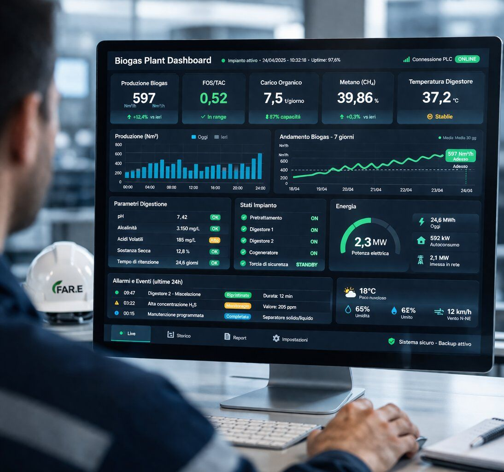

Il futuro del biogas è anche tecnologico. Partiamo dagli impianti reali per costruire gli strumenti di domani.
Nasce dall'esperienza operativa e dalla necessità di rendere gli impianti sempre più controllabili e prevedibili.
Non è un prodotto. È una direzione di sviluppo.
Tutto quello che esploriamo parte da un problema reale incontrato sugli impianti. Non da un'idea tecnologica in cerca di applicazione.
Non partiamo dalla tecnologia. Partiamo dagli impianti reali. Tutto quello che sviluppiamo nasce da problemi concreti.
Ogni area di sviluppo risponde a un limite operativo reale che abbiamo incontrato sul campo.
Il settore del biogas e biometano sta crescendo in capacità installata, ma non in maturità gestionale. Gli impianti diventano più numerosi e più complessi, ma gli strumenti per governarli restano gli stessi di dieci anni fa.
La digitalizzazione nel settore è ancora frammentata: sensori che raccolgono dati senza che nessuno li legga, SCADA che monitorano senza decidere, fogli Excel che sostituiscono sistemi di governance.
FAR.E. Tech nasce per colmare questo gap — non con promesse di intelligenza artificiale, ma con strumenti che rendano le decisioni operative più rapide, informate e tracciabili.

Non tre prodotti. Tre aree di ricerca e sviluppo che rispondono a problemi operativi reali.
Simulazione e controllo predittivo degli impianti
Evoluzione del design e ottimizzazione biologica
Connessione tra dati, biologia e gestione operativa
Trasparenza prima di tutto. Ecco cosa stiamo facendo e cosa non promettiamo.
FAR.E. Tech è attualmente in fase di studio e strutturazione. Non offriamo ancora soluzioni tecnologiche complete. Stiamo costruendo le fondamenta per il futuro.
Questo significa che ogni affermazione in questa pagina è una direzione, non una promessa. Quando avremo risultati concreti, li mostreremo. Per ora, mostriamo la direzione.
L'obiettivo è costruire, nel tempo, una piattaforma tecnologica a supporto dell'industrializzazione del settore.
Non un software. Non un prodotto SaaS. Ma un insieme di strumenti e modelli che rendano scalabile la governance che oggi applichiamo impianto per impianto.
Non promettiamo rivoluzioni. Costruiamo un'evoluzione solida. Dalla gestione di singoli impianti alla governance di portafogli.
Non vendiamo software. Lavoriamo con chi vuole costruire insieme il futuro della gestione industriale del biogas.
Analizziamo dove si perde margine Guarda FAR.E. Channel